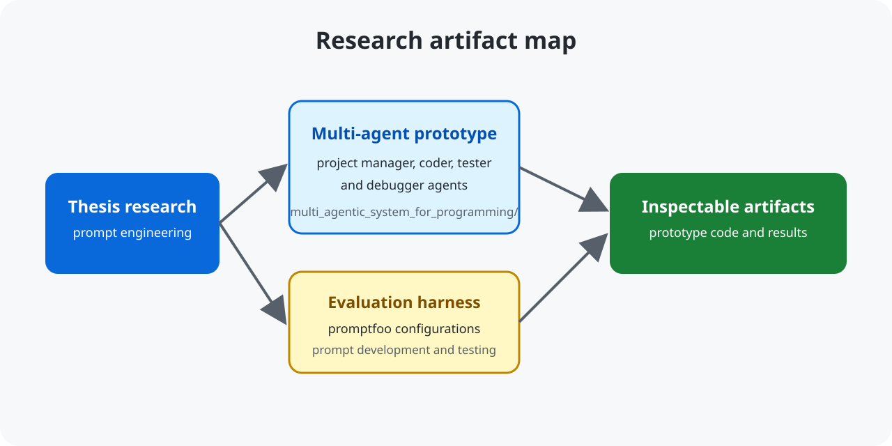

Source repository on GitHub · Thesis record
Prompt Engineering for Software Development
This repository contains Bachelor's thesis artifacts evaluating prompt engineering for software development with a multi-agent LLM system for software teams.

Quickstart
git clone https://github.com/mikaeltorni/prompt_engineering_for_software_development.git
cd prompt_engineering_for_software_development
find multi_agentic_system_for_programming prompt_development_and_testing -maxdepth 2 -type f | sort | head -20Each subproject documents its own dependencies and execution instructions.
Research artifacts
multi_agentic_system_for_programming/contains the project-manager, coder, tester, and debugger prototype.prompt_development_and_testing/contains promptfoo configurations, assertion prompts, evaluation data, and running instructions.
FAQ
Where is the full thesis?
Read the published thesis in the Theseus open repository.
How do I run evaluations?
Install the dependencies described in the evaluation instructions, then run the documented promptfoo commands from the evals/ directory.
What is the follow-up project?
Production-oriented prompt work continues in programming_prompts.